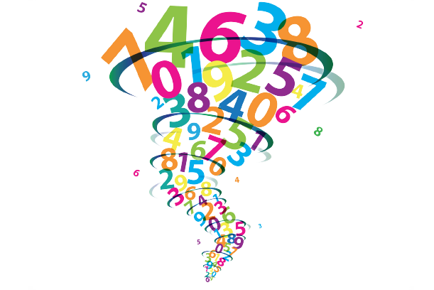

Esta pagina foi desenvolvida para o curso de programação web.
A pagina contem um banco de vídeos aulas de matemática. Contem desde matemática básica ate matemática avançada.
Esta pagina tem o objetivo de auxiliar nos estudos da matemática e mostrar atraves de vídeos aulas como estudar matemática não é complicado.
Esta pagina foi criada por Laura Gonçalves de Castro.
